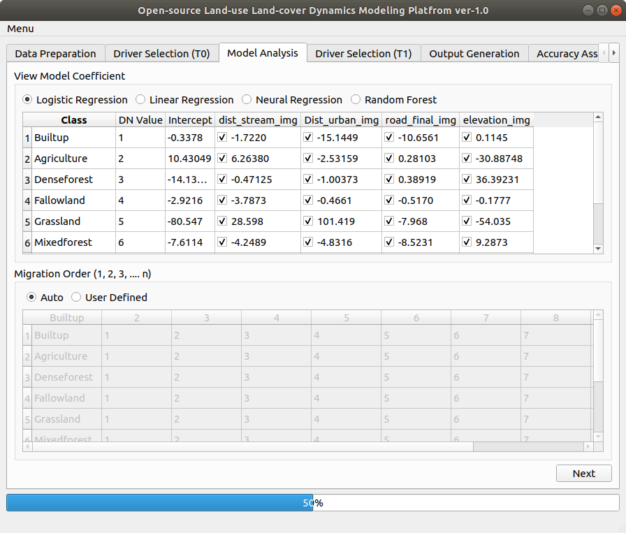

In the Class column against each DN number Type in the class name as per the Table 1. We will have screen as shown below.

Figure 12
Click on the button on left bottom corner of the tabs.
(OpenLDM) v1.0 IIRS
 button on left bottom corner of the tabs.
button on left bottom corner of the tabs.